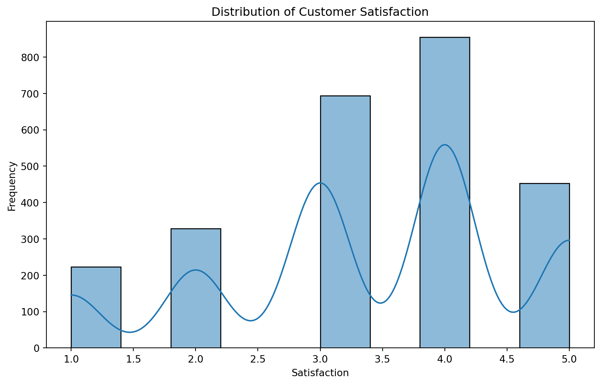

This post implements a few measure of variable importance, interpreted as a key drivers analysis, for certain aspects of a payment card on customer satisfaction with that payment card.
Introduction
We aim to identify and interpret the importance of various features using several metrics: Pearson Correlation, Standardized Regression Coefficients, Usefulness (Incremental R²), Shapley Values for Linear Regression, Johnson’s Relative Weights, Mean Decrease in Gini from Random Forest, and Feature Importance from XGBoost.
Understanding these key drivers will help us to gain insights into which factors most significantly affect customer satisfaction and how different statistical methods can provide unique perspectives on feature importance.
Data Preparation
import pandas as pd# Load the datasetdata = pd.read_csv('./data_for_drivers_analysis.csv')# Describe the datasetprint(data.describe())# Check for missing values print(data.isnull().sum())
impact: Makes a difference in the customer’s life.
The dataset contains various features related to customer satisfaction with a payment card. Each row represents a customer, and each column represents a feature that may influence their satisfaction level. The features include trust, build credit quickly, different from other cards, easy to use, appealing benefits, rewarding for responsible usage, used by many people, outstanding customer service, and making a difference in life.
Visualization
Distribution of Satisfaction Scores
import matplotlib.pyplot as pltimport seaborn as snsplt.figure(figsize=(10, 6))sns.histplot(data['satisfaction'], kde=True, bins=10)plt.title('Distribution of Customer Satisfaction')plt.xlabel('Satisfaction')plt.ylabel('Frequency')plt.show()

The histogram shows a relatively normal distribution of satisfaction scores, with the majority of scores clustering around 3 and 4.
Analysis of Each Metric
Pearson Correlation
Pearson correlation measures the linear relationship between two variables. It ranges from -1 to 1, where values closer to 1 indicate a strong positive relationship, values closer to -1 indicate a strong negative relationship, and values around 0 indicate no linear relationship.
The Pearson correlation coefficients for each feature with respect to customer satisfaction are calculated to understand which features have the strongest linear relationships with satisfaction.
trust,impact and service show relatively strong positive correlations with customer satisfaction, indicating that as these factors increase, so does satisfaction.
popular and differs also have positive correlations but are less strong.
Standardized Regression Coefficients
Standardized regression coefficients are used in regression analysis to compare the relative importance of different predictors. They are scaled to have a mean of zero and a standard deviation of one, making them comparable across different units of measurement.
from sklearn.linear_model import LinearRegressionfrom sklearn.preprocessing import StandardScalerimport numpy as np# Standardizing the featuresscaler = StandardScaler()X_scaled = scaler.fit_transform(X)# Fit the linear regression modelmodel = LinearRegression()model.fit(X_scaled, y)# Extract standardized regression coefficients (betas)standardized_coefficients = model.coef_normalized_coefficients = (np.abs(standardized_coefficients)/np.abs(standardized_coefficients).sum()) *100# Create a DataFrame for better visualizationcoefficients_df = pd.DataFrame({'Feature': X.columns,'Standardized Coefficient': standardized_coefficients,'Normalized Coefficient': normalized_coefficients})coefficients_df
Feature
Standardized Coefficient
Normalized Coefficient
0
trust
0.135635
25.280109
1
build
0.023411
4.363461
2
differs
0.032631
6.081798
3
easy
0.025744
4.798205
4
appealing
0.039647
7.389479
5
rewarding
0.005937
1.106526
6
popular
0.019470
3.628859
7
service
0.103573
19.304269
8
impact
0.150482
28.047294
These coefficients indicate how many standard deviations the dependent variable will change per standard deviation increase in the predictor variable.
impact and trust have the highest standardized coefficients, suggesting they are the most important predictors of customer satisfaction.
rewarding and popular have relatively low standardized coefficients, indicating they are less influential.
Usefulness
Usefulness measures the incremental contribution of each predictor to the R² value of the model. It helps in understanding how much additional variance in the dependent variable is explained by each predictor.
A higher incremental R² indicates that the predictor adds significant explanatory power to the model.
impact and trust provide significant explanatory power to the model.
rewarding and popular have minimal impact on the model’s explanatory power.
Shapley Values for Linear Regression
Shapley values provide a fair distribution of the total gain in model performance among the features. It considers all possible combinations of features and averages the marginal contributions.
SHAP Library: Uses the SHAP library to calculate Shapley values, which is efficient and well-optimized for various machine learning models.
import shap# Using the SHAP library's LinearExplainer for Shapley values approximationexplainer = shap.LinearExplainer(model, X_scaled)shap_values = explainer.shap_values(X_scaled)# Calculate mean absolute Shapley values for each feature and normalizemean_abs_shap_values = np.mean(np.abs(shap_values), axis=0)normalized_shap_values = (mean_abs_shap_values / mean_abs_shap_values.sum()) *100# Create a DataFrame for better visualizationshap_values_df = pd.DataFrame({'Feature': X.columns,'Shapley Value': mean_abs_shap_values,'Normalized Shapley Value': normalized_shap_values})shap_values_df
Feature
Shapley Value
Normalized Shapley Value
0
trust
0.136576
26.694012
1
build
0.023157
4.526070
2
differs
0.028857
5.640139
3
easy
0.025924
5.066851
4
appealing
0.039060
7.634243
5
rewarding
0.005861
1.145452
6
popular
0.019465
3.804387
7
service
0.102030
19.941906
8
impact
0.130708
25.546941
Manual Calculation: Implements a manual approach to calculate Shapley values by averaging over permutations, which provides a close approximation to the theoretical Shapley values.
import randomimport itertoolsfrom sklearn.metrics import r2_score# Prepare the features matrix X and the target vector yX_matrix = X.valuesy_vector = y.valuesdef approximate_shapley_values_manual(X, y, n_samples=1000): n_features = X.shape[1] shapley_values = np.zeros(n_features) random.seed(42)for i inrange(n_features): feature_contributions = []for _ inrange(n_samples):# Generate a random subset of features excluding the current feature subset = random.sample([x for x inrange(n_features) if x != i], k=random.randint(0, n_features-1)) subset_with_i = subset + [i]# Fit model with subset without the featureif subset: scaler_subset = StandardScaler() X_subset = scaler_subset.fit_transform(X[:, subset]) model_subset = LinearRegression().fit(X_subset, y) r2_subset = r2_score(y, model_subset.predict(X_subset))else: r2_subset =0# baseline R² with no features# Fit model with subset with the feature scaler_subset_with_i = StandardScaler() X_subset_with_i = scaler_subset_with_i.fit_transform(X[:, subset_with_i]) model_subset_with_i = LinearRegression().fit(X_subset_with_i, y) r2_subset_with_i = r2_score(y, model_subset_with_i.predict(X_subset_with_i))# Calculate marginal contribution marginal_contribution = r2_subset_with_i - r2_subset feature_contributions.append(marginal_contribution)# Calculate Shapley value for the feature shapley_values[i] = np.mean(feature_contributions)return shapley_values# Calculate approximate Shapley values manuallyshap_values_manual = approximate_shapley_values_manual(X_matrix, y_vector)# Normalize the Shapley values to sum to 100%normalized_shap_values_manual = (shap_values_manual / shap_values_manual.sum()) *100# Map the Shapley values to the feature names and normalize to sum to 100%shapley_values_manual_df = pd.DataFrame({'Feature': X.columns, 'Shapley Value': shap_values_manual, 'Normalized Shapley Value': normalized_shap_values_manual})shapley_values_manual_df
Feature
Shapley Value
Normalized Shapley Value
0
trust
0.021209
19.547288
1
build
0.006640
6.119831
2
differs
0.006930
6.386692
3
easy
0.009254
8.528979
4
appealing
0.009916
9.139131
5
rewarding
0.007342
6.767128
6
popular
0.005680
5.234813
7
service
0.017968
16.560666
8
impact
0.023561
21.715472
impact and trust again emerge as significant contributors to the model.
rewarding and popular contribute less significantly.
Johnson’s Relative Weights
Johnson’s Relative Weights (also known as Johnson’s Epsilon) offer an approximation to Shapley values for linear regression by transforming the predictors into orthogonal components and assessing their contributions.
from relativeImp import relativeImp# Specify outcome variableyName ='satisfaction'# Calculate Johnson's Relative Weights using relativeImprelative_weights = relativeImp(data, outcomeName=yName, driverNames=features)relative_weights
driver
rawRelaImpt
normRelaImpt
0
trust
0.021623
19.835524
1
build
0.007217
6.620792
2
differs
0.007594
6.966081
3
easy
0.008982
8.239683
4
appealing
0.009099
8.346395
5
rewarding
0.006538
5.997431
6
popular
0.005878
5.392328
7
service
0.018134
16.635164
8
impact
0.023946
21.966601
These weights provide a measure of the relative importance of each feature in the context of a linear model.
impact and trust have the highest relative weights, confirming their significant role.
rewarding and popular remain the least important.
Mean Decrease in Gini from Random Forest
The Mean Decrease in Gini measures the importance of each feature in reducing the Gini impurity across all trees in the forest. It is specific to tree-based models like Random Forest.
from sklearn.ensemble import RandomForestRegressor# Fit a Random Forest modelrf_model = RandomForestRegressor(n_estimators=100, random_state=42)rf_model.fit(X, y)# Calculate feature importances using the mean decrease in Gini coefficientrf_feature_importances = rf_model.feature_importances_# Normalize to sum to 100%normalized_rf_feature_importances = (rf_feature_importances / rf_feature_importances.sum()) *100# Create a DataFrame for better visualizationrf_feature_importances_df = pd.DataFrame({'Feature': X.columns,'Mean Decrease in Gini': rf_feature_importances,'Normalized Mean Decrease in Gini': normalized_rf_feature_importances})rf_feature_importances_df
Feature
Mean Decrease in Gini
Normalized Mean Decrease in Gini
0
trust
0.155865
15.586537
1
build
0.102301
10.230144
2
differs
0.089897
8.989693
3
easy
0.099904
9.990365
4
appealing
0.085534
8.553448
5
rewarding
0.101057
10.105692
6
popular
0.094944
9.494376
7
service
0.129664
12.966365
8
impact
0.140834
14.083380
Features with a higher Mean Decrease in Gini are more important in reducing impurity and improving model accuracy.
trust and impact are crucial in reducing Gini impurity, aligning with their high importance in previous metrics.
service and build also contribute significantly.
Feature Importance from XGBoost
XGBoost provides feature importances based on various metrics like gain, weight, and cover. We use the gain metric, which measures the improvement in accuracy brought by a feature to the branches it is on.
import xgboost as xgb# Fit an XGBoost modelxgb_model = xgb.XGBRegressor(n_estimators=100, random_state=42)xgb_model.fit(X, y)# Get feature importances using the 'gain' metricbooster = xgb_model.get_booster()importance_dict = booster.get_score(importance_type='gain')# Convert the importance dictionary to a DataFramexgb_importance_df = pd.DataFrame(list(importance_dict.items()), columns=['Feature', 'Importance'])# Normalize to sum to 100%xgb_importance_df['Normalized Importance'] = (xgb_importance_df['Importance'] / xgb_importance_df['Importance'].sum()) *100xgb_importance_df
Feature
Importance
Normalized Importance
0
trust
0.726525
28.986719
1
build
0.197839
7.893330
2
differs
0.141373
5.640452
3
easy
0.179203
7.149780
4
appealing
0.164887
6.578636
5
rewarding
0.163910
6.539633
6
popular
0.190827
7.613552
7
service
0.279030
11.132675
8
impact
0.462813
18.465223
Features with higher gain contribute more to improving the model’s accuracy. * trust stands out as the most important feature, with a high gain value. * impact and service are also significant contributors.
In this analysis, we explored various statistical methods to identify the key drivers of customer satisfaction in a payment card dataset. Each method provides unique insights into feature importance, helping us to understand which factors are most influential. By comparing these methods, we gain a comprehensive view of the factors driving customer satisfaction, enabling better decision-making and targeted improvements.
Trust consistently emerged as a significant driver across all metrics, indicating that building trust with customers is crucial for enhancing their satisfaction.
Impact was also highlighted as a key factor, suggesting that customers value the positive influence the payment card has on their lives.
Service and Ease of Use were important in several metrics, emphasizing the need for excellent customer service and user-friendly features.
The combination of these methods provides a robust analysis, allowing us to cross-validate the importance of features and identify the most critical drivers of customer satisfaction. This multi-faceted approach can guide businesses in prioritizing areas for improvement and investment, ultimately leading to higher customer satisfaction and loyalty.